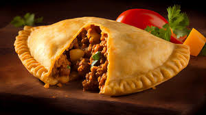
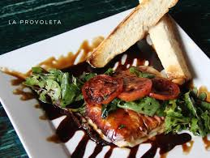

Empanada Argentina

Provoleta
Sopa Crema
Sopa De Cebollas
.png) RESTAURANT YAJU
RESTAURANT YAJULa lasaña es un plato de origen italiano que se ha vuelto popular en todo el mundo. Consiste en capas de pasta intercaladas con una variedad de ingredientes, generalmente incluyendo carne, queso y salsa de tomate.
El filete de solomillo, también conocido como filet mignon, es uno de los cortes más finos y apreciados. Proviene de la parte más tierna y magra del animal, ubicada en la región lumbar. Es un corte muy suave y se caracteriza por su textura sedosa.
El ribeye es un corte de carne fina y jugosa que se extrae de la parte superior de las costillas del animal. Tiene un buen marmoleo de grasa intramuscular que le otorga una gran cantidad de sabor y jugosidad.
Empanada Argentina
Provoleta
Sopa Crema
Sopa De Cebollas